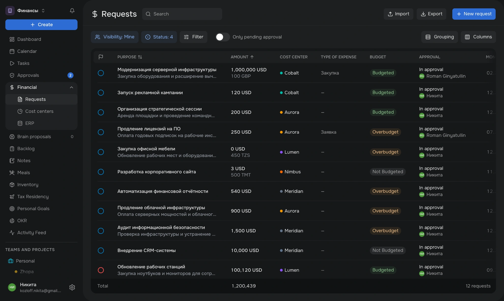

Сократил ручные операции пользователей и зависимость от сторонних сервисов
Мой вклад
Discovery, UX Audit, UX/UI Design, Design System, AI Prototyping, Design QA
2026

Мой вклад
Discovery, UX Audit, UX/UI Design, Design System, AI Prototyping, Design QA
2026

Контекст
Платформа обеспечивает централизованное хранение данных, управление операционной деятельностью и контроль исполнения.
Проблема
Часть функций была неудобной, необходимых возможностей не хватало, а команде разработки не хватало дизайн-экспертизы для дальнейшего развития интерфейса.
Пользователи
Он вёл большую часть операционных процессов и пользовался сервисом чаще самого заказчика.
Discovery
Декомпозировал работу бизнес-ассистента на ключевые задачи, сопоставил их с возможностями платформы и самостоятельно прошёл пользовательские сценарии. Сверил наблюдения с обратной связью бизнес-ассистента и определил направления доработки.
Приоритизация
| Приоритет | Обоснование |
|---|---|
| 1. Доработка ключевых рабочих сценариев | Устранить проблемы в существующих функциях, которыми бизнес-ассистент пользуется в основной работе. |
| 2. Недостающие рабочие функции | Закрыть задачи, для выполнения которых пользователям приходилось обращаться к сторонним сервисам. |
| 3. Личные функции заказчика | Расширить возможности платформы для личных потребностей, не влияющих на основные рабочие процессы. |
| 4. Дизайн-система | Систематизировать интерфейс и визуальные правила после проработки приоритетных сценариев. |
Рабочий сценарий 1
За постановку задач преимущественно отвечал бизнес-ассистент. Его фактический порядок действий лёг в основу AS-IS.
| Выявленная проблема | Последствия для пользователя |
|---|---|
| 1. Разрыв сценария. Создание и настройка задач происходили в разных интерфейсах. | Приходилось повторно искать задачи по названию или идентификатору, теряя рабочий контекст. |
| 2. Повторяющиеся действия. Каждая задача создавалась через отдельный попап. | Однотипные операции отнимали время и вызывали раздражение у бизнес-ассистента. |
| 3. Отсутствие общей иерархии. Связи между задачами не отображались целиком. | Приходилось переходить между карточками и самостоятельно восстанавливать взаимосвязи задач. |
Сценарий до изменений
После созвонов с заказчиком бизнес-ассистенту было важно быстро зафиксировать структуру связанных задач, пока он помнил договорённости. Старый интерфейс вынуждал сначала создавать задачи по отдельности и только потом настраивать зависимости между ними.
| Что улучшил | Результат для пользователя |
|---|---|
| 1. Объединил создание и настройку задач в одном интерфейсе | Можно сразу работать со всеми параметрами задачи без повторного открытия карточки. |
| 2. Добавил построение связей прямо при создании задачи | Можно быстро зафиксировать структуру поручений после созвона, а заполнение деталей отложить на потом. |
| 3. Заменил списки связей деревом с быстрой навигацией | Иерархия задач стала наглядной, а переходить между связанными задачами можно без возврата к общему списку. |
| Показатель | AS-IS | TO-BE |
|---|---|---|
| Создание и настройка задачи в одном интерфейсе | ✗ | ✓ |
| Возможность сначала выстроить связи, а затем заполнить задачи | ✗ | ✓ |
| Возможность увидеть иерархию задач целиком | ✗ | ✓ |
| Количество кликов | 7 | 4 (−43%) |
Количество кликов — предварительный расчёт. Для окончательной публикации следует проверить, что в AS-IS и TO-BE выполнен одинаковый сценарий.
Откройте сайт на компьютере — так макеты сохранят все детали.